CS180 Project 2: Fun With Filters And Frequencies
Part 1: Fun With Filters
Part 1.1: Convolutions From Scratch
Max Difference 2-Loop vs SciPy Convolution: 3.552713678800501e-15
The 2-loop implementation runs much faster than 4-loops, and SciPy’s convolve2d runs the fastest. I used zero padding around images to handle borders. Zero padding can make responses near the edge darker because zeros get included in the convolution window.
Code Snippets
# Convolutions using 4 for loops (with padding & 0 fill values)
def convolution_four_loops(img, kernel):
kernel = np.flipud(np.fliplr(kernel)) # invert kernel for convolution
h, w = img.shape
kh, kw = kernel.shape
pad_h, pad_w = kh // 2, kw // 2
# pad with zeros
img_padded = np.pad(img, ((pad_h, pad_h), (pad_w, pad_w)), mode='constant')
output_img = np.zeros_like(img, dtype=float)
for i in range(h):
for j in range(w):
pixel_update = 0.0
for k in range(kh):
for l in range(kw):
pixel_update += img_padded[i + k, j + l] * kernel[k, l]
output_img[i, j] = pixel_update
return output_img
# Convolutions using 2 for loops (with padding & 0 fill values)
def convolution_two_loops(img, kernel):
kernel = np.flipud(np.fliplr(kernel))
h, w = img.shape
kh, kw = kernel.shape
pad_h, pad_w = kh // 2, kw // 2
# pad with zeros
img_padded = np.pad(img, ((pad_h, pad_h), (pad_w, pad_w)), mode='constant')
output_img = np.zeros_like(img, dtype=float)
for i in range(h):
for j in range(w):
overlapping_patch = img_padded[i:i+kh, j:j+kw]
output_img[i, j] = np.sum(overlapping_patch * kernel)
return output_img
# Compare with SciPy convolve on a dummy image
from scipy.signal import convolve2d
image = np.random.randn(64, 64)
kernel = np.array([[1, 2, 1],
[2, 4, 2],
[1, 2, 1]]) # smoothing filter
out_4 = convolution_four_loops(image, kernel)
out_2 = convolution_two_loops(image, kernel)
out_scipy = convolve2d(image, kernel, mode='same', boundary='fill', fillvalue=0)
print("Part 1.1: Comparing convolution implementations...")
print("Max difference 4-loop vs SciPy convolution:", np.abs(out_4 - out_scipy).max())
print("Max difference 2-loop vs SciPy convolution:", np.abs(out_2 - out_scipy).max())
data/selfie.jpg
data/part_1_1/selfie_box.jpg
data/part_1_1/selfie_dx.jpg
data/part_1_1/selfie_dx.jpgPart 1.2: Finite Difference Operator
When choosing the right threshold, I started by examining orders of magnitude. Threshold = 1 captured no edges. Threshold = 0.01 captured too many edges. Threshold = 0.1 still did not capture enough edges. When I decreased to 0.09–0.05, grass texture interfered with the camera legs. I settled on threshold = 0.1 as the best trade-off.

data/cameraman.jpg
data/part_1_2/cameraman_dx.jpg
data/part_1_2/cameraman_dy.jpg
data/part_1_2/cameraman_gradient_magnitude.jpg
data/part_1_2/cameraman_edge.jpgPart 1.3: Derivative Of Gaussian Filter
Comparing the 2D Gaussian versus Difference-of-Gaussians (DoG): visually the dx/dy versus DoGx/DoGy results are similar, and gradient magnitudes look close. Using the same threshold = 0.1, the DoG edge map removes a bit more noise and border artifacts.

data/part_1_3/cameraman_gaussian.jpg
data/part_1_3/DoGx_filter.jpg
data/part_1_3/DoGy_filter.jpg
data/part_1_3/cameraman_dogx.jpg
data/part_1_3/cameraman_dogy.jpg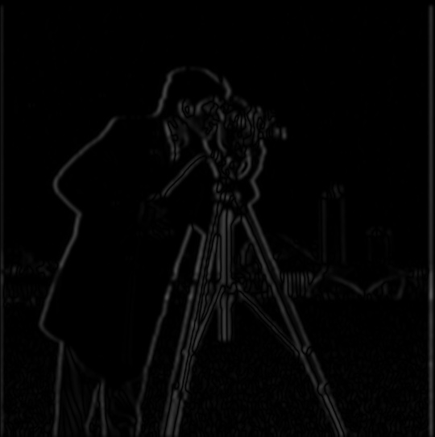
data/part_1_3/cameraman_dx_smooth.jpg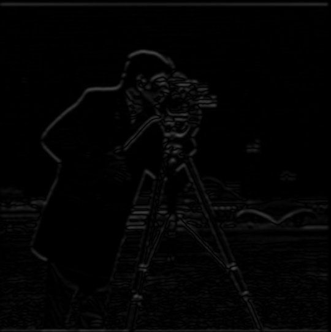
data/part_1_3/cameraman_dy_smooth.jpg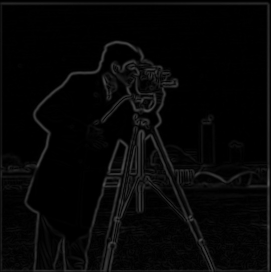
data/part_1_3/cameraman_gradient_magnitude_smooth.jpg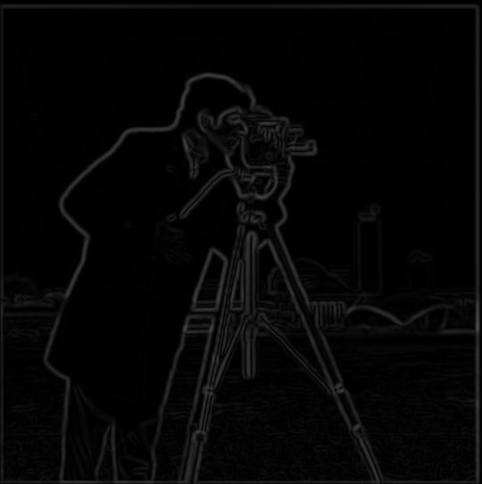
data/part_1_3/cameraman_gradient_magnitude_dog.jpg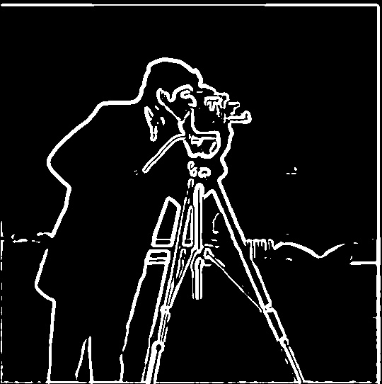
data/part_1_3/cameraman_edge_smooth.jpg
data/part_1_3/cameraman_edge_dog.jpgPart 2: Fun With Frequencies
Part 2.1: Image Sharpening
Taj mahal photo is smaller and higher contrast than my photo of me and my friend. Thus the gaussian blur of the Taj mahal seems much blurrier (since the kernel is proportionally larger to the image array). This means that the difference between the unmodified images and their gaussian blurs is much larger for Taj mahal than my photo. You can see this as more details in the high-frequency images. This difference carries through when I use the high frequency images with an image unsharp mask (original image + alpha * high frequency image). I experimented with alpha=[0.5, 1.0, 1.5, 2.0]. The Taj mahal looks worse with large sharpening (alpha=2.0) as already defined edges (like the trees) become super pixelated. This is because the high frequency image is weighted too much, and the edges are too strong. To my eyes, the ideal alpha for this is 1.0. My photo looks better however with large sharpening (alpha=2.0) since there are fewer edges in the original image and because the original image has lower contrast. It really benefits from more weight on the high-frequency image… so you can now see the sweat on our faces and crumbs on our shirts.
Taj Mahal

data/part_2_1/gaussian_taj.jpg
data/part_2_1/highfreq_taj.jpg
data/part_2_1/sharpened_alpha0.5_taj.jpg
data/part_2_1/sharpened_alpha1.0_taj.jpg
data/part_2_1/sharpened_alpha1.5_taj.jpg
data/part_2_1/sharpened_alpha2.0_taj.jpgEmilee
data/part_2_1/gaussian_emilee.jpg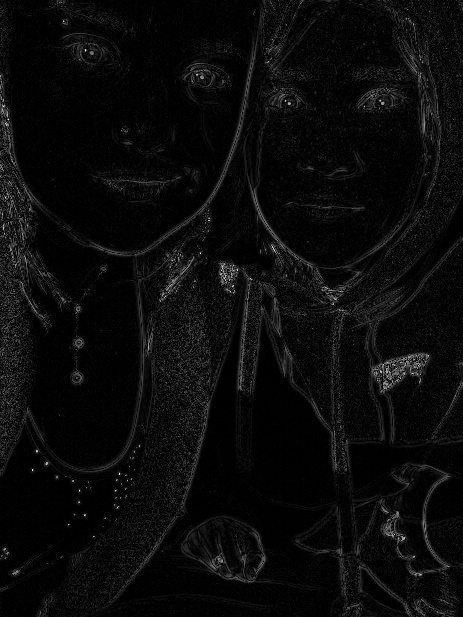
data/part_2_1/highfreq_emilee.jpgdata/part_2_1/sharpened_alpha0.5_emilee.jpg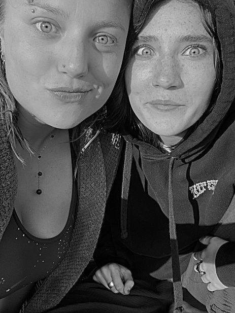
data/part_2_1/sharpened_alpha1.0_emilee.jpgdata/part_2_1/sharpened_alpha1.5_emilee.jpgdata/part_2_1/sharpened_alpha2.0_emilee.jpgInterestingly, when I started with a high resolution image of Emilee and I, you could not see any effect of sharpening. But when I reduced the resolution to about the same as the Taj Mahal image, the same alpha then worked!
Part 2.2: Hybrid Images
Hybrid images feel uncanny: from close, high frequencies dominate; from far, low frequencies dominate.

data/hybrid_image_derek_nutmeg.jpg
data/hybridadrian2_sammie.jpg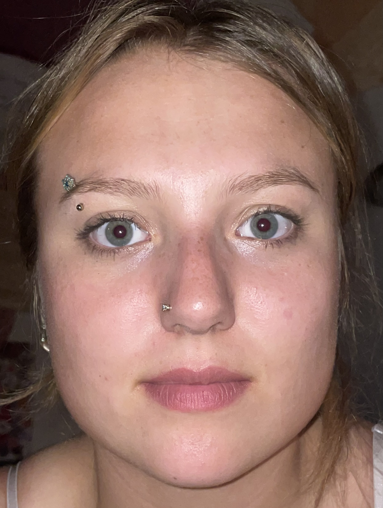
data/sammie1.jpg
data/adrian2.jpg
data/hybrid_mona_caledonia.jpgDerek-Nutmeg: From close up you see a cat. From far away you see a man. Forget Batman. Catman’s gotchur back…. erm I mean watch your back.
Sammie-Adrian: From close up you see a woman (me), from far away you see a man (my boyfriend). You can tell we have similar shaped eyes, but very different noses and jawlines, resulting in poor alignment of the lower face (even when aligned on the mouth and nose).
Mona-Caledonia: Observe the Mona-Lisa effect on my housemate, Caledonia. From close up, she is unsmiling and looking away from you. From far away (10-20ft), she’s looking directly at you and smiling.
Consider image 1 as the high-frequency version, and image 2 as the low frequency version.
I slightly modified my original hybrid approach to include some low frequencies from image 1:
hybrid = α · high_pass(img1) + β · low_pass(img1) + ζ · low_pass(img2)
Best hyperparameters (empirical):
- Derek-Nutmeg: α = 1, β = 0.3, ζ = 1
- Sammie-Adrian: α = 1.5, β = 0.3, ζ = 0.5
- Mona-Caledonia: α = 1.5, β = 0.3, ζ = 0.5
The same hyperparameters worked best on both Sammie-Adrian and Mona-Caledonia probably because they were taken in the same lighting, same distance, same zoom, same camera.
Mona-Caledonia Fourier Transforms

data/caledonia_frown.jpeg
data/highfreq_fft_magnitudecaledonia_frown.jpeg
data/lowfreq_fft_magnitudecaledonia_smile.jpeg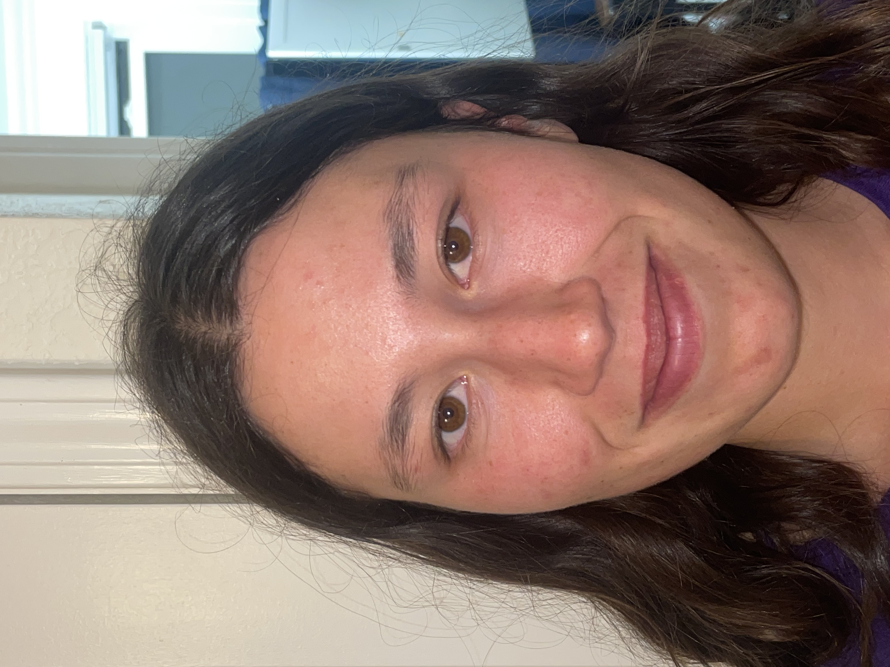
data/caledonia_frown.jpeg
data/hybrid_fft_magnitude_mona_caledonia.jpgIt makes sense that both Fourier transforms look similar, as the input images are (intentionally) very similar.
Part 2.3: Gaussian And Laplacian Stacks Of Orapple

data/part_2_3/oraple_laplacian_stack.pngPart 2.4: Multi-Resolution Blending
Orapple Blend

data/apple.jpeg
data/orange.jpeg
data/part_2_4/final_blend_oraple.pngThird Eye Adrian Blend
data/adrian2.jpg
data/eye.jpg
data/part_2_4/final_blend_adrian_oracle.png
data/part_2_4/adrian_oracle_laplacian_stack.pngMona-Caledonia Pt2 Blend
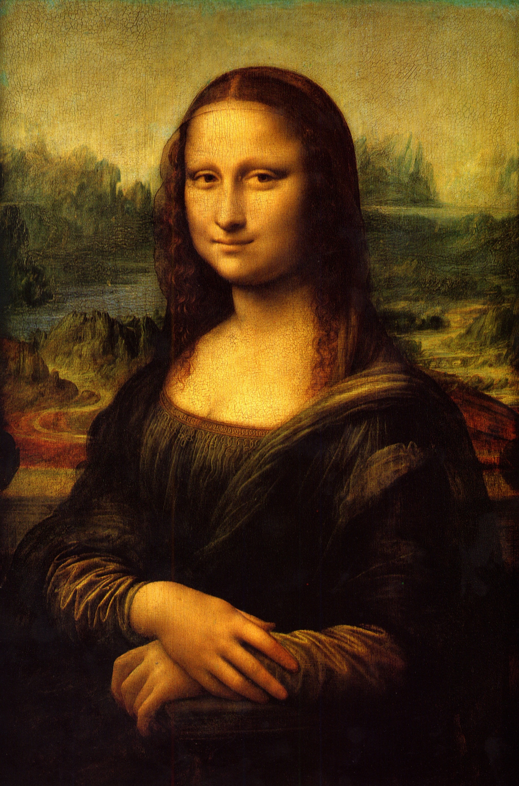
data/mona_lisa.jpg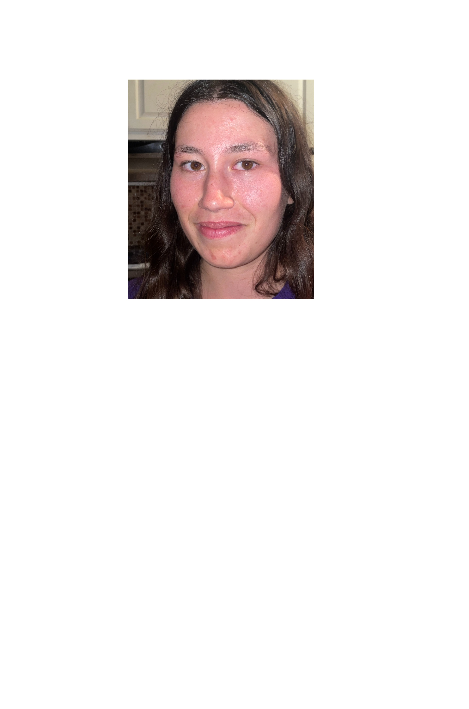
data/caledonia_mona_face.jpg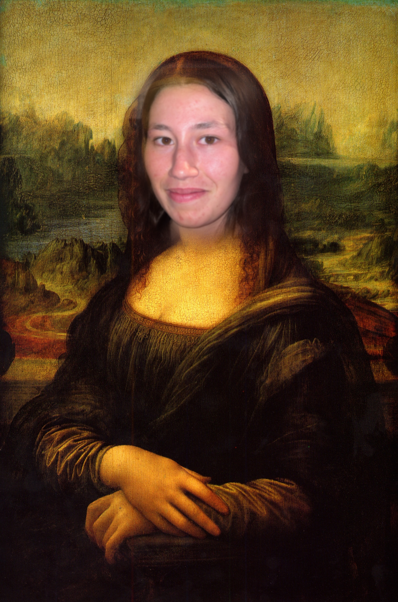
data/part_2_4/final_blend_mona_caledonia.png